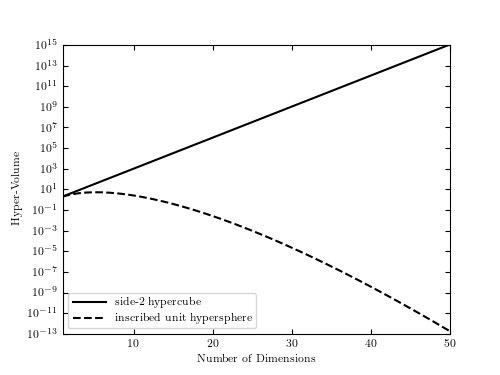

Curse of Dimensionality: Volume Ratio¶
This figure shows the ratio of the volume of a unit hypercube to the volume of an inscribed hypersphere. The curse of dimensionality is illustrated in the fact that this ratio approaches zero as the number of dimensions approaches infinity.
{kind=link}
# Author: Jake VanderPlas
# License: BSD
# The figure produced by this code is published in the textbook
# "Statistics, Data Mining, and Machine Learning in Astronomy" (2013)
# For more information, see http://astroML.github.com
# To report a bug or issue, use the following forum:
# https://groups.google.com/forum/#!forum/astroml-general
import numpy as np
from matplotlib import pyplot as plt
from scipy.special import gammaln
#----------------------------------------------------------------------
# This function adjusts matplotlib settings for a uniform feel in the textbook.
# Note that with usetex=True, fonts are rendered with LaTeX. This may
# result in an error if LaTeX is not installed on your system. In that case,
# you can set usetex to False.
from astroML.plotting import setup_text_plots
setup_text_plots(fontsize=8, usetex=True)
dims = np.arange(1, 51)
# log of volume of a sphere with r = 1
log_V_sphere = (np.log(2) + 0.5 * dims * np.log(np.pi)
- np.log(dims) - gammaln(0.5 * dims))
log_V_cube = dims * np.log(2)
# compute the log of f_k to avoid overflow errors
log_f_k = log_V_sphere - log_V_cube
fig, ax = plt.subplots(figsize=(5, 3.75))
ax.semilogy(dims, np.exp(log_V_cube), '-k',
label='side-2 hypercube')
ax.semilogy(dims, np.exp(log_V_sphere), '--k',
label='inscribed unit hypersphere')
ax.set_xlim(1, 50)
ax.set_ylim(1E-13, 1E15)
ax.set_xlabel('Number of Dimensions')
ax.set_ylabel('Hyper-Volume')
ax.legend(loc=3)
plt.show()